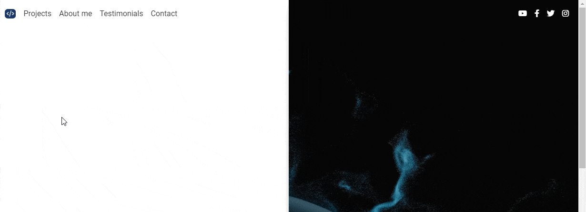
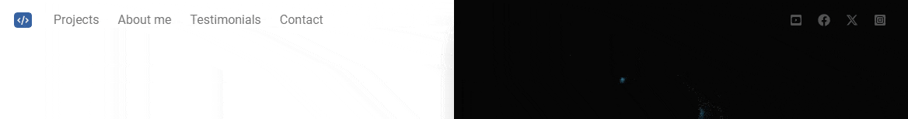
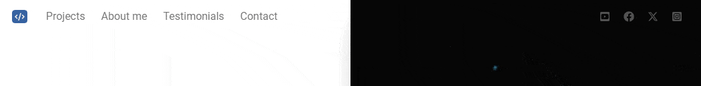

Our navbar already looks good, but we can still improve it.
Currently, the color of our navbar is fixed. However, we, using a bit of custom CSS and JS, will create an animated navbar, which will be transparent at the start, and when the user starts scrolling, the navbar will change color.
Here's what we want to achieve:
We need to add some small modifications to our navbar:
id="animated-navbar so we can use later in our JavaScript
code
.bg-[#FBFBFB] class so the navbar can be transparent
.shadow-md and
.shadow-black/5
We need also to add id="navbar-icons" to the div containing the
icons on the right side of the navbar:
We need to add a small piece of JavaScript code that will grab our navbar and add a new class to it when the user starts scrolling the page.
Open the src/js/index.js file and below component
initialization, add the following code:
What we do here:
getElementById method and the id of the navbar
(animated-navbar)
.bg-red-500 to the navbar when the user scrolls
down, and remove it when the navbar is at the top of the page
For testing purpose we added .bg-red-500 class so it could be
clearly visible when the navbar changes color. Save the file and check if it
works.
Now when you start scrolling the page the navbar will turn red. However, when you return to the starting point, it will become transparent again.

If you open the developer console, you'll see that when you start scrolling,
the .bg-red-500 class is added to the navbar When the scroll
returns to the starting point, both class and color are removed.
We have used .bg-red-500 class only for testing purpose. Now
let's change it to .bg-white, because this will be our target
color.
Replace .bg-red-500 with .bg-white in
src/js/index.js:
Now to add smooth animation when the navbar changes the color add this line
of CSS code between the <style> tags inside of
<head> element:
Now, when you start scrolling the page, you will notice that the navbar color does not change abruptly, but smoothly.
